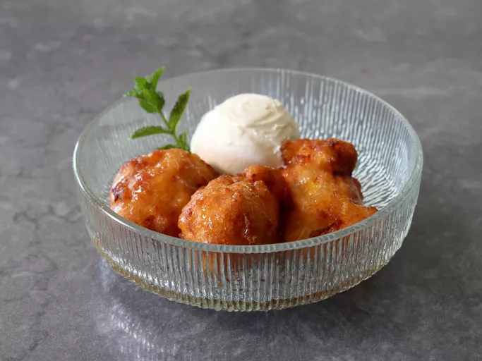

Peach Fritters

- prep time: 30 minutes
- Cook Time: 1 hour 5 minutes
- cool time: 2 hours
- servings: 12
description
Watch out Little Debbie—this copycat recipe for Cosmic Brownies is a dead ringer for (if not better than) the original treat. Our recipe tester went as far as to call them "the most perfect brownie ever" thanks to the combination of a chewy and fudgy brownie, topped with a melt-in-your-mouth ganache, and crunchy sprinkles. This dessert will transport you back to childhood.
ingredients
brownie
- baking spray
- 14 ounces bittersweet chocolate bar, coarsely chopped (60% cacao)
- 1½ cups unsalted butter
- ⅔ cup unsweetened cocoa
- 6 tablespoons canola oil
- 2 tablespoons vanilla extract
- 2⅓ cups granulated sugar
- 1 cup packed light brown sugar
- 6 large eggs
- 1 cup all-purpose flour
- 2 tablespoons cornstarch
- 1½ teaspoons kosher salt
- ½ teaspoon baking powder
ganache
- 7 ounces semisweet chocolate bar, coarsely chopped (56% cacao)
- ¾ cup heavy cream
- 1 tablespoon unsalted butter
- ⅛ teaspoon kosher salt
- ¼ cup rainbow candy-coated chocolate pieces
Instructions
- gather all ingredients.
- Prepare the Brownies: Preheat the oven to 350F (175C). Line a 13- x 9-inch baking pan with aluminum foil, leaving a 2-inch overhang on short sides. Coat foil and sides of pan with baking spray; set aside.
- Microwave chocolate and butter in a large microwavable bowl on high, stirring in 30 second intervals, until fully melted and smooth, about 2 minutes total. Whisk in cocoa, canola oil, and vanilla until fully combined.
- Whisk sugar and brown sugar into chocolate mixture until combined. Add eggs, 1 at a time, whisking until smooth and combined after each addition, about 2 minutes total. Gently fold in flour, cornstarch, salt, and baking powder until just combined, making sure not to overmix the batter, about 45 seconds.
- Transfer to the prepared baking pan.
- Bake in preheated oven until set and a wooden pick inserted in the center comes out with a few moist crumbs, 55 to 60 minutes. Remove from the oven and let rest in pan on a wire rack until room temperature, about 1 hour. Once at room temperature, cover, and place in refrigerator; chill completely, at least 1 more hour.
- When brownie has chilled, prepare the Ganache: Place chocolate in a medium mixing bowl; set aside. Bring heavy cream to a simmer in a small saucepan over medium-high, stirring occasionally. Pour heavy cream over chopped chocolate; whisk until chocolate is fully melted, about 45 seconds. Whisk in butter and salt until smooth and shiny; set aside.
- Invert cooled Brownie onto a large cutting board and discard aluminum foil. Using a serrated knife, trim and discard outer edges, about 1/4-inch on all sides. Using an offset spatula, spread Ganache in an even layer over top of brownie. Sprinkle evenly with rainbow candy-coated chocolates. Chill Brownie, uncovered, until Ganache is mostly set, about 5 minutes.
- Cut Brownie into 12 even (4- x 2-inch) pieces. Using the back of the knife, make an indent going crosswise along center of each brownie.
Nutrition Facts
- 146 calories
- 8g fat
- 19g carbs
- 2g protein
the info in this website is sourced from this recipe on allrecipes.com